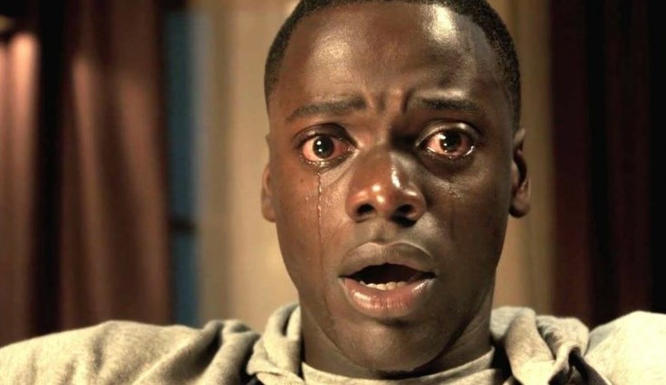

Roteiro: Jim Uhls
Roteiro: Jim Uhls Elenco: Edward Norton, Brad Pitt, Helena Bonham Carter, Jared Leto, entre outros.
Origem: EUA / Alemanha
Ano: 1999
Se não, confira agora a lista com 5 filmes que se você assistir vai mexer com sua mente.
Roteiro: Jim Uhls Sinopse: Um homem deprimido que sofre de insônia conhece um estranho vendedor chamado Tyler Durden e se vê morando em uma casa suja depois que seu perfeito apartamento é destruído.
A dupla forma um clube com regras rígidas onde homens lutam. A parceria perfeita é comprometida quando uma mulher, Marla, atrai a atenção de Tyler.
Critica: Clube da Luta se torna então uma das obras mais relevantes e influentes do cinema atual.
Uma reflexão crítica e ácida sobre a sociedade de consumo na qual vivemos e os efeitos que ela provoca nos indivíduos.
Assim como acontece no livro, David Fincher torna seu longa transgressor e provocativo, com uma linguagem única e atraente, que convida o espectador a refletir sobre como nossa sociedade está se tornando cada vez mais opressora e vazia. O soco no estômago que todos precisamos levar.
(Fonte) Sinopse: 1954. Teddy Daniels (Leonardo DiCaprio) investiga o desaparecimento de um paciente no Shutter Island Ashecliffe Hospital, em Boston. No local, ele descobre que os médicos realizam experiências radicais com os pacientes, envolvendo métodos ilegais e anti-éticos.
Teddy tenta buscar mais informações, mas enfrenta a resistência dos médicos em lhe fornecer os arquivos que possam permitir que o caso seja aberto.
Quando um furacão deixa a ilha sem comunicação, diversos prisioneiros conseguem escapar e tornam a situação ainda mais perigosa.
Critica: DiCaprio incorpora o personagem de maneira fantástica. A angústia de Daniels e a sede de resolver o caso nos contagiam até os últimos minutos.
Você consegue entrar na pele do detetive, e passa a se questionar, naquele manicômio, até onde uma pessoa é considerada insanamente louca. A loucura seria algo relativo? Mas afinal, o que é a loucura?
E a maior questão que o filme me proporcionou: o louco sabe que é louco? Ou nada daquilo parece anormal para ele? São tantos os pacientes “loucos” apresentados durante o filme que essas questões surgem uma hora ou outra.
Um filme tão incrível, com atuações impecáveis e roteiro sem furos provavelmente condiz com um diretor aclamado.
Martin Scorsese foi o grande responsável pela direção desse prestigiado filme, e não podíamos esperar menos. Muita neblina, muita angústia e muita incerteza fazem parte do enredo. A história se encaixa perfeitamente.
Os personagens são cheios de personalidade, e não consigo imaginar outras pessoas nos papéis de Daniels e Aule. A sintonia de DiCaprio e Ruffalo é completa. (Fonte) Sinopse: Após ver a Terra consumindo boa parte de suas reservas naturais, um grupo de astronautas recebe a missão de verificar possíveis planetas para receberem a população mundial, possibilitando a continuação da espécie.
Cooper (Matthew McConaughey) é chamado para liderar o grupo e aceita a missão sabendo que pode nunca mais ver os filhos. Ao lado de Brand (Anne Hathaway), Jenkins (Marlon Sanders) e Doyle (Wes Bentley), ele seguirá em busca de uma nova casa.
Com o passar dos anos, sua filha Murph (Mackenzie Foy e Jessica Chastain) investirá numa própria jornada para também tentar salvar a população do planeta.
Critica: Nolan, que é acostumado a realizar obras de grandes durações, consegue bater seu recorde pessoal com os 169 minutos de Interestelar, esse é o filme mais longo da carreira desse diretor único. As variantes desse ótimo roteiro levam o público a diversos momentos de interação.
De ficção científica, pula para um drama e depois somos jogados para um suspense de tirar o fôlego. O cineasta, conhecido pelo seu perfeccionismo extremo, reuniu um elenco de primeira linha e escolheu o ótimo Matthew McConaughey (que após seu Oscar, emplaca um belo trabalho após outro) para o papel principal.
Falando sobre o ótimo elenco, não tem como deixarmos de destacar os ótimos Casey Affleck e Matt Damon, além da bela Jessica Chastain, que possuem cenas brilhantes durante a fita. (Fonte) Sinopse: Chris (Daniel Kaluuya) é jovem negro que está prestes a conhecer a família de sua namorada caucasiana Rose (Allison Williams).
A princípio, ele acredita que o comportamento excessivamente amoroso por parte da família dela é uma tentativa de lidar com o relacionamento de Rose com um rapaz negro, mas, com o tempo, Chris percebe que a família esconde algo muito mais perturbador.
Critica: Escrito e dirigido pelo ótimo comediante Jordan Peele (Key and Peele e Keanu: Cadê Meu Gato?!), Get Out é um thriller muito eficiente, que também conta com ótimos momentos de humor.
Tem, é claro, aquele riso nervoso, que nasce em cenas absurdas/surpreendentes, mas também há sequências de alívio cômico, a maioria protagonizada por Lil Rel Howery, que vive um amigo que cuida do cachorro de Chris enquanto ele está fora no final de semana. O amigo também é confidente - via telefone - de algumas das situações que ele está vivendo na casa dos sogros.
(Fonte) Sinopse: Patrick Bateman (Christian Bale) jovem, branco, bonito e sem nada que o diferencie de seus colegas de Wall Street. Protegido pela conformidade, privilégio e riqueza, Bateman também um serial killer, que vaga livremente e sem receios em busca de uma nova vítima.
Seus impulsos assassinos são abastecidos por um zeloso materialismo e uma inveja torturante quando ele encontra alguém que possui mais do que ele. Após um colega dar-lhe um cartão de visitas melhor que o seu em tinta e papel, a sede de sangue de Bateman surge e ele aumenta ainda mais suas atividades homicidas, tornando-se um perigoso e violento psicopata.
Critica: Uma crítica social direta e sangrenta. A ganância, a vida pelas aparências e os sentimentos anestesiados dos Estados Unidos dos anos 80 em uma sátira afiada e precisa, que dosa bem humor, violência e cinismo - ainda que a cineasta não saiba encerrar o filme. Bale está impressionante. A narração em off que acompanha insistentemente Patrick Bateman (Christian Bale) desde os primeiros minutos de Psicopata Americano podem deixar uma má impressão de início como um artifício batido para exemplificar o que a imagem não consegue falar por si só, mas enquanto o personagem pratica seus exercícios diários e passa os mais caros produtos de beleza em seu corpo e rosto e se vangloria por isso,
percebemos que essa opção é carregada de um objetivo maior: explanar o interior de Bateman enquanto carro-chefe de uma narrativa onde nosso protagonista será o rosto mais íntimo durante o longa. É uma pena que o filme se desespere em seus 15 minutos finais, tentando encontrar para si um desfecho satisfatório e que vise agradar gregos e troianos.
A tentativa é louvável e não chega a prejudicar gravemente o resultado, mas são fortes momentos de desequilíbrio narrativo e criativo que ficam incomodam. Esses tropeços não diminuem o impacto geral de ''Psycho'', um thriller eficiente em sua reflexão sobre os demônios interiores fomentados por uma sociedade consumista, apoiada na exposição de reflexos que pouco condizem com o nosso verdadeiro.
(Fonte)
- O segundo filme da nossa lista é: Ilha Do Medo(2010).
 Roteiro Laeta Kalogridis, Dennis Lehane
Roteiro Laeta Kalogridis, Dennis Lehane
Elenco: Leonardo DiCaprio, Mark Ruffalo, Ben Kingsley
Origem: Shutter Island, EUA
Ano: 2010
- O terceiro filme da nossa lista é nada mais, nada menos que: Interestelar(2014).
Roteiro Jonathan Nolan, Christopher Nolan
Elenco: Matthew McConaughey, Anne Hathaway, Michael Caine
Origem: EUA,Reino Unido
Ano: 2014
- O quarto filme da lista surpreendeu bastante com seu final: Corra(2017).

Roteiro Jordan Peele
Elenco: Daniel Kaluuya, Allison Williams, Catherine Keener
Origem:EUA
Ano: 2017
- O último filme de nossa lista, mas não menos importante, temos: Psicopata Americano(2000)
Roteiro Mary Harron, Guinevere Turner
Elenco: Christian Bale, Willem Dafoe, Jared Leto
Origem: EUA
Ano: 2000